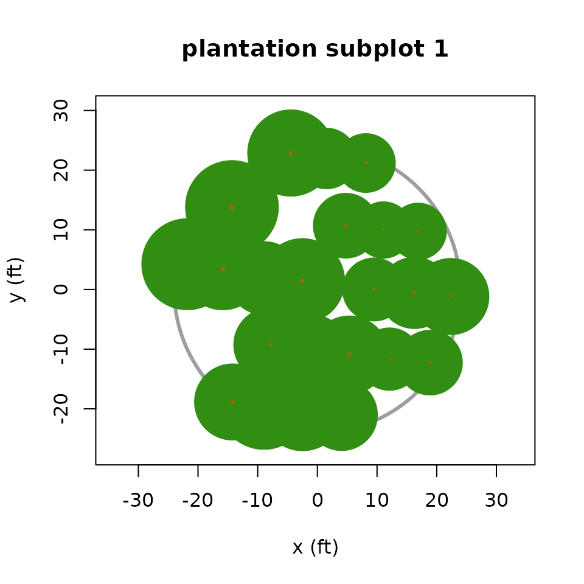

Compute fractional tree canopy cover of a subplot/microplot by crown overlay
Source:R/overlay_crowns.R
overlay_crowns.Rdoverlay_crowns() computes the proportion of a circular polygon covered
by a given set of tree crowns modeled as discs and having spatially explicit
stem locations. The sampled area is generally an FIA subplot with radius 24
ft (7.315 m) for trees with diameter >= 5 in. (12.7 cm), or an FIA
microplot with radius 6.8 ft (2.073 m) for trees >= 1 in. (2.54 cm)
but < 5 in. (12.7 cm) diameter (denoted as "saplings"). Stem locations
are specified as distance and azimuth from subplot/microplot center.
Arguments
- tree_list
A data frame containing tree records for a subplot/microplot. Must have columns
DIST(stem distance from subplot/microplot center in the same units assample_radius),AZIMUTH(horizontal angle from subplot/microplot center to the stem location, in the range0:359) andCRWIDTH(tree crown width in the same units assample_radiusandDIST).- sample_radius
A numeric value giving the radius of the circular subplot/microplot.
- digits
Optional integer indicating the number of digits to keep in the return value (defaults to
1, will be passed toround()).
Value
Estimated tree canopy cover as percent of the area specified by
sample_radius that is covered by a vertical projection of circular
crowns.
Examples
# subplot 1 of the `plantation` plot
trees <- within(plantation, CRWIDTH <- predict_crwidth(plantation))
trees[trees$SUBP == 1 & trees$DIA >= 5, ] |>
overlay_crowns(sample_radius = 24)
#> [1] 86.9
plot_crowns(trees, subplot = 1, main = "plantation subplot 1")
